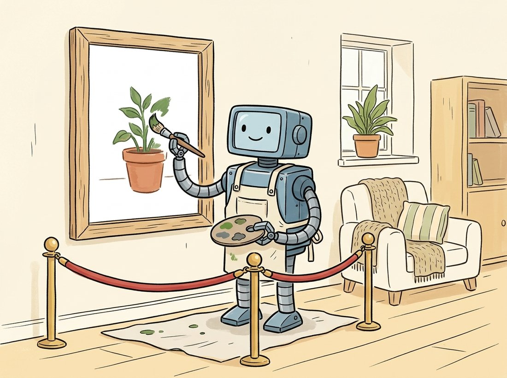

"You drew a white blob over the ex-boyfriend and asked me to fill it with a potted plant. I have done so. The lighting even matches. I am very discreet."
An Inpainting Model With Excellent Boundaries
Inpainting edits a chosen region of an image while preserving everything outside it, by letting the diffusion model generate freely inside a binary mask and forcing it to keep the original pixels (or latents) outside the mask at every denoising step. The mask is the contract: white means "you may repaint here," black means "leave this exactly alone." Three variations follow from one mechanism: inpainting fills or replaces a region, outpainting extends the canvas beyond its original borders by masking new empty area, and object replacement combines a precise segmentation mask with a new prompt to swap one object for another. The recurring difficulty is the boundary: making the generated region blend seamlessly into the preserved region, in both texture and lighting, is where naive masking fails and the engineering lives.

The illustration above captures that contract. Where Section 35.1 fixed where content goes and Section 35.2 fixed what a subject is, this section opens the third axis of control: which pixels a model may touch. This is the generative form of a problem the book met long ago. Chapter 7 covered classical inpainting: filling a scratch or a removed object by diffusing surrounding pixel values inward or copying matching patches. Those methods preserve texture but cannot invent plausible new content; they can hide a small blemish but cannot replace a face with a potted plant. Diffusion inpainting can, because it has a generative prior over whole images. This section builds the masking mechanism, the blending that fixes seams, the inpainting-specific model variant, and then outpainting and object replacement as applications of the same idea.
1. The Mask as a Contract Beginner
The simplest inpainting recipe needs no special model at all. Take any latent diffusion model, run the reverse process as usual, but at every denoising step overwrite the latents outside the mask with the (correctly-noised) latents of the original image. The masked region is free to evolve toward whatever the prompt wants; the unmasked region is repeatedly snapped back to the original, so it cannot drift. Let $m$ be the binary mask (1 inside the region to edit, 0 outside), let $z_t$ be the current noisy latent of the generation, and let $z_t^{\text{orig}}$ be the original image's latent noised to step $t$ with the closed-form formula from Chapter 33. The blend applied after each reverse step is
where $\odot$ is elementwise multiplication. The masked area keeps the model's evolving output; the rest is forced back to the original. This is sometimes called "blended latent diffusion," and it works with any model, which is why diffusers offers it for non-inpainting checkpoints. Figure 35.3.1 shows the data flow.
2. The Inpainting U-Net: Telling the Model About the Mask Intermediate
Blended latent diffusion has a weakness: the model inside the mask does not know it is inpainting. It generates as if from scratch and only learns about the surrounding context through the blend, which can produce content that is locally plausible but contextually wrong (a tree growing out of a person's shoulder because the model never saw the shoulder while painting). Dedicated inpainting models fix this by giving the U-Net the mask and the masked image as extra input channels. A standard latent U-Net takes 4 latent channels; an inpainting U-Net takes 9: the 4 noisy latent channels, 4 channels of the masked original image's latent, and 1 channel for the downsampled mask itself.
With these extra channels the model sees, at every step and every layer, exactly which region it must fill and what surrounds it. It can match texture, continue lines across the boundary, and place content that fits the scene. The cost is a model trained specifically for inpainting (Stable Diffusion ships an sd-v1-5-inpainting checkpoint). The code below runs a proper inpainting pipeline.
# Run a dedicated inpainting checkpoint: the U-Net takes the mask and the
# masked image as extra channels, so it paints inside the white region with
# full awareness of the surrounding room rather than from scratch.
import torch
from diffusers import StableDiffusionInpaintPipeline
from diffusers.utils import load_image
pipe = StableDiffusionInpaintPipeline.from_pretrained(
"stable-diffusion-v1-5/stable-diffusion-inpainting", torch_dtype=torch.float16).to("cuda")
image = load_image("room.png") # the original photo
mask = load_image("mask.png") # white where to repaint, black elsewhere
result = pipe(
prompt="a leafy potted monstera plant, soft window light",
image=image,
mask_image=mask,
num_inference_steps=30,
strength=0.99, # how much to change inside the mask
).images[0]
result.save("edited_room.png")stable-diffusion-inpainting checkpoint receives mask_image and the masked image as extra U-Net channels, so it generates the plant with full awareness of the surrounding room, matching the light and continuing the floor under the pot. The strength=0.99 value sets how completely the masked region is repainted.Both blended latent diffusion and an inpainting U-Net know where to paint (the mask). Only the inpainting U-Net also knows what surrounds the painted region from the inside, because the masked image is fed in as conditioning channels rather than only enforced afterward through the blend. That single difference is why dedicated inpainting checkpoints produce far fewer boundary absurdities. When an inpaint looks locally fine but contextually wrong, the first fix is to switch from blended latent diffusion on a base model to a real inpainting checkpoint.
3. The Seam Problem Intermediate
Even with an inpainting model, the boundary between generated and original pixels can show a visible seam: a faint edge, a color or sharpness mismatch, a lighting discontinuity. Three techniques, often combined, soften it. Mask feathering blurs the mask edge so the blend transitions gradually rather than at a hard pixel line. Context expansion gives the model a generous margin of original pixels around the masked region (crop a box larger than the mask, inpaint, paste back) so it has enough surroundings to match. And VAE round-trip awareness: because editing happens in latent space, encoding and decoding through the VAE of Chapter 31 slightly alters even unmasked pixels, so high-quality pipelines paste the original unmasked pixels back at full resolution after decoding rather than trusting the decoded version everywhere.
# Post-decode seam fix: paste the generated region back onto the original
# full-resolution pixels through a Gaussian-blurred (feathered) mask, so the
# boundary fades gradually and VAE round-trip drift outside the mask is undone.
import numpy as np
from PIL import Image, ImageFilter
def composite_with_feather(original, generated, mask, feather_px=12):
"""Paste the generated region over the original with a feathered mask edge."""
# Feather the mask so the blend is gradual, not a hard pixel boundary.
soft = mask.convert("L").filter(ImageFilter.GaussianBlur(feather_px))
soft = np.asarray(soft, dtype=np.float32)[..., None] / 255.0 # (H,W,1) in [0,1]
o = np.asarray(original, dtype=np.float32)
g = np.asarray(generated, dtype=np.float32)
out = soft * g + (1.0 - soft) * o # generated inside, original outside
return Image.fromarray(out.astype(np.uint8))
# original unmasked pixels are restored everywhere the mask is black,
# and the transition across the boundary is smoothed over `feather_px`.composite_with_feather function blurs the mask edge by feather_px pixels and blends soft * g + (1 - soft) * o, pasting the generated region back onto the original full-resolution pixels so the hard seam and the VAE round-trip drift in the unmasked area both disappear, the single most common fix for "the edit looks pasted on."Before reaching for a full inpaint, build intuition on the cheapest knob here with no GPU at all. Take any photo, paste a solid-color rectangle over part of it as the "generated" patch, and call composite_with_feather with feather_px set to 0, then 4, then 12, then 40. Lay the four results side by side. At 0 you see a razor-sharp pasted-on edge; by 12 the boundary melts into the background; at 40 the patch bleeds so far that its own content starts leaking outward and the original shows through where you wanted the edit. Watch for the value where the seam vanishes but the patch still fills the region it should: that sweet spot is exactly what subsection 3 means by "matching the boundary," and feeling it on a trivial paste makes the same parameter obvious when you later wrap a real inpaint.
Object removal is the feature people reach for most and admit to least. The classic stress test is the unwanted ex in a vacation photo, but the same inpainting call quietly powers "remove the tourist from the monument," "delete the trash can from the listing photo," and "make the power line disappear from the sunset." The model does not know it is rewriting history; it just sees a white mask and a prompt that says "plausible background," and dutifully invents a wall, some sky, or a patch of grass where a person used to be. The honest difficulty is always the same one: the shadow the removed object cast is outside the mask, so a careless removal leaves a ghost shadow with nothing to cast it.
4. Outpainting: Painting Past the Border Intermediate
Outpainting is inpainting with the mask placed outside the original image. To extend a photo to a wider aspect ratio, you create a larger blank canvas, paste the original into part of it, and mark the new empty area as the inpainting mask. The model fills the new area to continue the scene. The only twist over ordinary inpainting is that the masked region touches the original on just one or two edges, so giving the model context is even more important. This is why outpainting is intrinsically the harder of the two: an interior inpaint is surrounded by known pixels on all four sides, so the fill is tightly constrained from every direction, whereas an outpaint borders the original on only one or two sides and must invent the rest from a prompt and far less surrounding evidence. With fewer constraints, the model has more freedom to drift off-scene, which is exactly why a generous context strip and a descriptive prompt matter most here. A strip of the original along the shared border, plus a prompt that describes the continuation, keeps the extension coherent. Many tools outpaint in overlapping tiles, extending a little at a time and re-using the freshly generated strip as context for the next, to avoid the model losing track of the scene over a large extension. Figure 35.3.2 contrasts the tightly-constrained interior fill against the loosely-constrained outpaint side by side.
5. Object Replacement: Mask Meets Prompt Advanced
The most useful editing primitive in practice is replacing one object with another: swap the sedan for an SUV, the coffee cup for a wine glass, the cloudy sky for a sunset. This is inpainting where the mask is a precise object segmentation and the prompt names the replacement. The mask precision is what matters most, and this is where the promptable segmentation of Chapter 24 pays off: Segment Anything (SAM) produces a tight mask from a single click or box, far better than a hand-drawn blob. The pipeline is: segment the object with SAM, dilate the mask slightly so the new object can occupy a touch more room, then inpaint with the replacement prompt.
# Object replacement = precise segmentation mask + replacement prompt.
# SAM turns one click into a tight mask, a dilation gives the new object
# breathing room, then the inpainting model paints the replacement in place.
import numpy as np, cv2, torch
from PIL import Image
from segment_anything import sam_model_registry, SamPredictor
from diffusers import StableDiffusionInpaintPipeline
# 1. Segment the target object with SAM from a single click point.
sam = sam_model_registry["vit_b"](checkpoint="sam_vit_b.pth").to("cuda")
predictor = SamPredictor(sam)
img = cv2.cvtColor(cv2.imread("street.png"), cv2.COLOR_BGR2RGB)
predictor.set_image(img)
masks, scores, _ = predictor.predict(
point_coords=np.array([[420, 300]]), # a click on the car
point_labels=np.array([1]), multimask_output=True)
mask = masks[scores.argmax()] # pick the highest-confidence mask
# 2. Dilate so the new object has a little breathing room at the edges.
mask_u8 = (mask.astype(np.uint8) * 255)
mask_u8 = cv2.dilate(mask_u8, np.ones((15, 15), np.uint8), iterations=1)
# 3. Inpaint the replacement object into the masked region.
pipe = StableDiffusionInpaintPipeline.from_pretrained(
"stable-diffusion-v1-5/stable-diffusion-inpainting", torch_dtype=torch.float16).to("cuda")
out = pipe(prompt="a red double-decker bus", image=Image.fromarray(img),
mask_image=Image.fromarray(mask_u8), num_inference_steps=30).images[0]
out.save("replaced.png")SamPredictor.predict produces a tight mask from one click point, cv2.dilate with a 15x15 kernel gives the replacement room to breathe, and the inpainting model paints a bus where the car was. The tightness of the SAM mask is what keeps the edit from bleeding onto the road or the building behind.The click-based SAM above still needs a human to point at the object. Grounded-SAM chains an open-vocabulary detector (Grounding DINO) to SAM so you can produce the mask from a text phrase: "the car" becomes a box becomes a mask, with no click. Combined with an inpainting pipeline, this turns object replacement into a single text-to-text operation ("replace the car with a bus") in a few lines, where a hand-rolled version would need a detector, a segmenter, mask post-processing, and the inpainting loop wired together. The libraries handle the detector-to-segmenter prompt passing and the mask formatting internally; you supply two phrases.
Who: the product team at a property-listing platform, 2024. Situation: sellers uploaded photos of empty rooms, and listings with furnished "staged" photos sold faster, but physical staging cost hundreds per room and could not scale to millions of listings. Problem: they needed to add furniture to empty rooms without altering the walls, windows, floor, or the room's actual geometry, since a misleading photo is a legal and trust problem. Decision: they built a pipeline that segmented the floor and open space with SAM, masked only that region, and inpainted furniture with a depth ControlNet from Section 35.1 conditioned on the room's depth so the furniture sat in correct perspective. The walls and windows, outside the mask, were never touched. Result: photorealistic virtual staging at near-zero marginal cost, with the structural truth of the room preserved because the mask forbade any change to walls and fixtures. Lesson: the mask is not just a convenience, it is a guarantee; constraining the edit to a region is what made an otherwise risky feature trustworthy enough to ship.
Hand or click masks are a bottleneck. The 2024 to 2025 frontier removes the mask entirely for many edits. SmartBrush and the broader "blended" inpainting line condition on the text so the model paints only where the description applies. More dramatically, the instruction-editing models of Section 35.4 and in-context editors like FLUX.1 Kontext (2025, arXiv:2506.15742) let you say "remove the car" or "make the sky stormy" with no mask at all; the model localizes the edit itself. Inpainting remains the most controllable and predictable primitive (you know exactly which pixels can change), so it stays the workhorse for production pipelines that need guarantees, while mask-free editing wins for quick, exploratory edits where a precise region is not required.
Blended latent diffusion enforces the mask only after each reverse step, while an inpainting U-Net receives the mask and masked image as input channels. Explain in two or three sentences why the second approach produces more context-appropriate fills, using the example of a region adjacent to a person's shoulder. Then state one situation where blended latent diffusion on a base model is still the better choice (hint: consider when no inpainting checkpoint exists for the base model you must use).
Combine the SAM masking of subsection 5 with the inpainting pipeline of subsection 2 to remove an object (replace it with plausible background, prompt "empty background, matching surroundings"). Apply the composite_with_feather function from subsection 3 to paste the result back. Try feather_px of 0, 8, and 24 and report which gives the least visible seam, and explain why too much feathering can let the removed object faintly reappear.
Take a portrait photo and outpaint it to triple its width in one shot (mask the whole new area at once), then again in three overlapping steps (extend by one-third each time, reusing the new strip as context). Compare the coherence of the extended scene in the two approaches and explain, in terms of how much original context the model sees, why the tiled approach usually stays consistent over large extensions while the single-shot approach can drift or repeat.